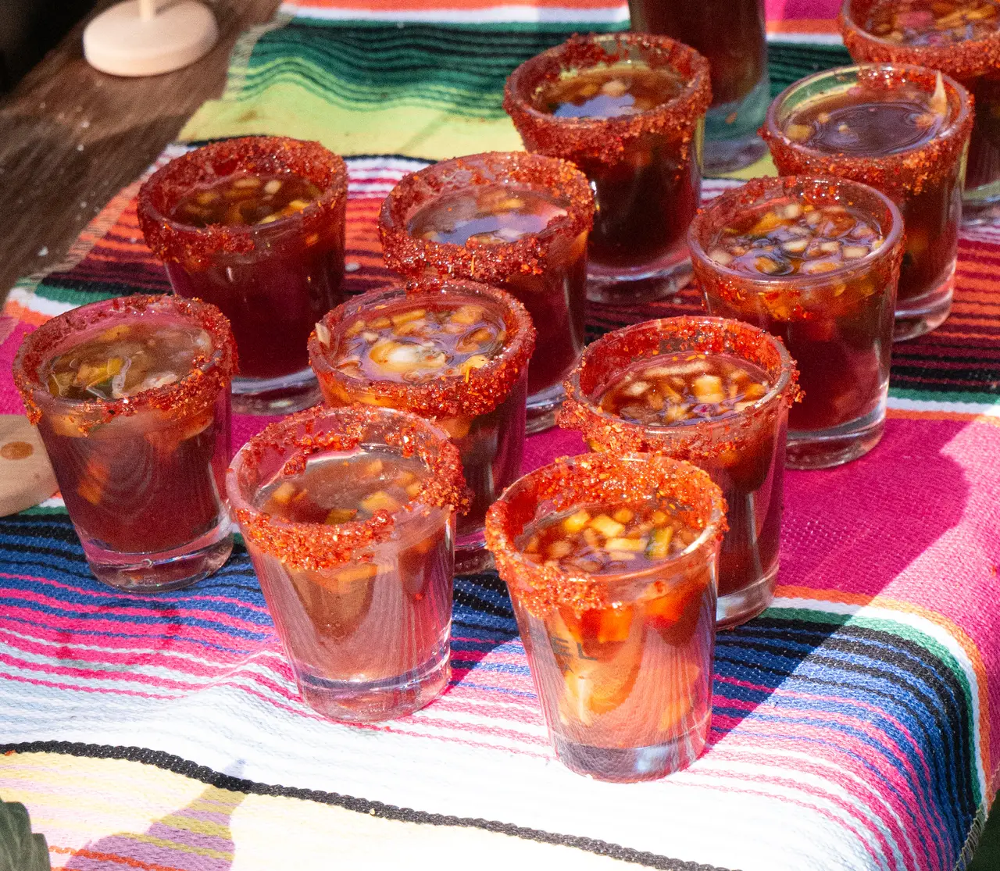

Comida
Para el centro de la mesa. Se comparte o no se pide.
México · Estados Unidos
Comida que sí llena, tragos coquetos y canciones que se gritan completas.
México y Estados Unidos
Comida mexicana, un brindis y una canción para compartir. Catering para tu celebración en Houston.
Explora Catering
El plan
Tú solo trae el pretexto.
Para el centro de la mesa. Se comparte o no se pide.

Coquetos. Sin lista de precios: pregunta y te contamos.

Canciones que te sabes completas.

Pasa por las mesas. Nadie se lo niega a nadie.

Trae a los cuatro. Aquí caben todos.

Cumpleaños, renuncias, quincenas. Cualquier pretexto.
Los pretextos
Hay fechas que se celebran en más de una cantina. Encuentra la tuya.
Tradición mexicana, coctelería y una noche para venir de catrina.
Ven con tu disfraz. El concurso se vive en cada cantina.
Mesas largas, brindis completo y el micrófono que no se le niega a nadie. Aquí no hay mesa reservada para influencers: la mejor foto la hace tu gente.
Conoce La Cantina
Comida + tragos
Tragos coquetos y comida que sí llena.
Guacamole con chicharrón, queso fundido y quesabirria con consomé. El centro de la mesa se comparte.
Paloma de la casa, carajillo y más de 30 marcas de agave. Pregunta: aquí te contamos.
El micrófono pasa por las mesas. La canción la eliges tú y el coro lo pone el lugar.
Celebraciones
Tu gente, una mesa y un buen pretexto. Elige tu sucursal y consulta disponibilidad para celebrar.
¿Sin Yolanda? Si sabes, sabes.